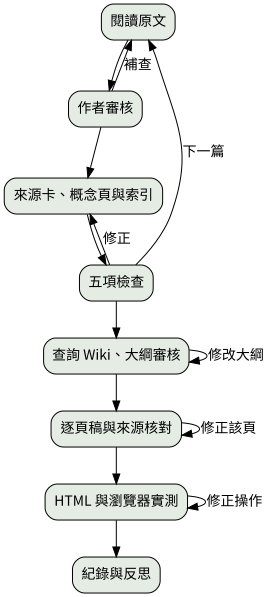

製作流程與實測

- 原文 → 作者審核。需補查時回原文。
- 來源卡 → 概念頁與索引 → 五項檢查。修正後重查；有下一篇就重跑。
- 三題查詢 → 大綱 → 人工確認。證據不足回 Wiki，順序不合回大綱。
- 逐頁稿 → 來源核對 → HTML → 瀏覽器測試。內容不符修該頁；互動異常修網頁再測。
- 通過後記錄、反思與發布。
| 閱讀原文並送審 |
作者同意後更新來源卡、主題與索引 |
回同篇原文補查 |
| 入庫後五項 lint |
尚有來源則處理下一篇，五篇通過後查詢 Wiki |
修受影響的卡或主題頁，重跑同一個檢查 |
| 教學查詢與大綱 |
作者確認順序後產生逐頁內容 |
依問題回到來源、概念頁或大綱 |
| 網頁實測 |
實測結果與反思寫入紀錄 |
操作問題回 HTML 修正，知識問題回 Wiki |
本輪實測。 從 Wiki 首頁進入 W02，核對僅改動操作時的兩列。讀取允許、匯出拒絕，兩列都能追到案例的核准範圍。另從同頁找到 S01 的 AC-6 原則。完整狀態見工作紀錄。互動簡報及公開網址預定在後續階段實測。